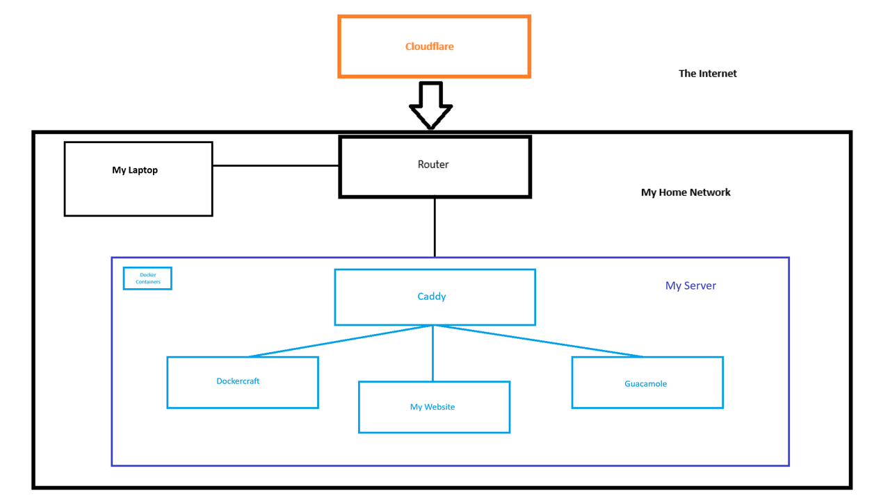

Ronak's Website
My Network
This is a diagram of my network. My DNS/domain name is hosted with Cloudflare and I also proxy all traffic using this domain through Cloudflare to keep my home IP hidden. All of the traffic is encrypted and is automatically switched over to https with Cloudflare, which is really handy. This means that I only have to port forward port 80 on my router to my server.
On my server, I use docker to run all of my services, like this website, some other websites, and other tools that I use. Docker makes it really easy to restart a single application when I need to. It essentially gives me little VMs so everything is sandboxed and seperate.
The most important application that I have on my server is the reverse proxy. The reverse proxy that I decided to use was Caddy because it is super simple to setup and configure. I use the reverse proxy to route incoming traffic based on which domain they want to go to, like just ronakpjain.com or another subdomain.
Then I have my actual services like my website. I have made my website using flask and writing all of the html, css, js by hand. I tried to figure out react but I decided I didn't want to use node. All of the pictures, and files are served with flask and they are all stored on my server (I should probably back them up :) ). Flask has an in-built server, but it is more of a development server and is only single-threaded. Instead of using that, I use something called Gunicorn which is just a drop-in replacement.
The other services include Guacamole and Dockercraft. I use Guacamole to be able to remote into my computer from anywhere with a browser. My server and laptop are on the same internal network so they are already connected. Dockercraft is a super cool minecraft server that lets you control your docker containers from minecraft. I don't really use it but it is something cool. I add new services pretty often / when I get bored.